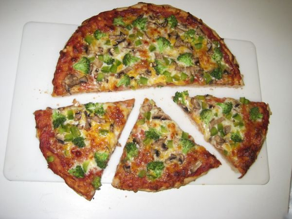

Perfect Pie Crust

Photo: lgkiii (CC BY 2.0)
A large-batch flaky pie pastry made from flour and sugar cut with vegetable shortening and bound with egg, vinegar, and water. The dough yields enough for five crusts.
Directions
- Mix dry ingredients together. Mix the wet ingredients together. Add wet to dry. Divided into 5 parts. Flatten and get dough ready to roll. Wrap in plastic or wax paper and chill at least 1/2 hour before rolling.
- Mix dry ingredients together. Mix the wet ingredients together. Add wet to dry. Divided into 5 parts. Flatten and get dough ready to roll. Wrap in plastic or wax paper and chill at least 1/2 hour before rolling.
Goes well with
https://baron-3dl.github.io/normans-kitchen/recipe/perfect-pie-crust.html